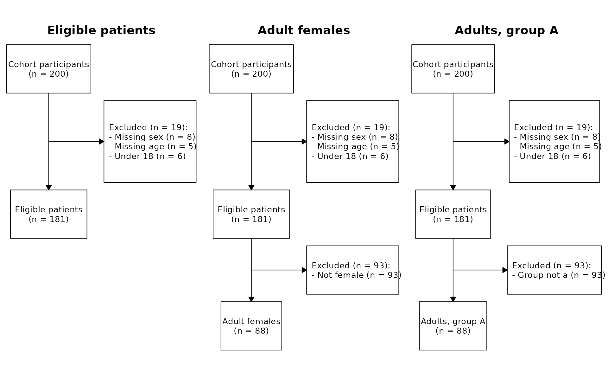
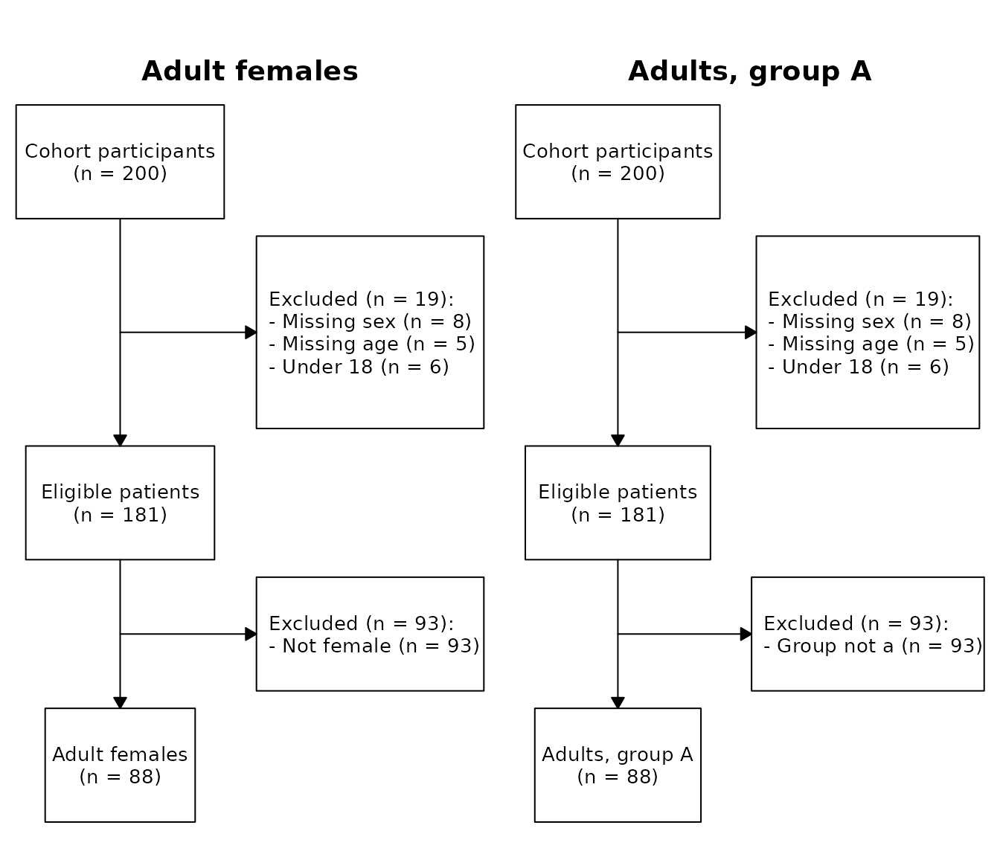

cohort provides the CohortPipeline R6 class
for building analytic cohorts with full provenance. Cohort construction
is kept strictly upstream of analysis: the pipeline produces analytic
data tables, then hands them off to whatever consumes them
downstream.
We start with a small simulated dataset.
library(cohort)
#> cohort 2026.6.23
#> https://www.rwhite.no/cohort/
library(data.table)
#>
#> Attaching package: 'data.table'
#> The following object is masked from 'package:base':
#>
#> %notin%
set.seed(1)
d <- data.table(
id = 1:200,
age = sample(c(NA, 16:80), 200, replace = TRUE),
sex = sample(c("F", "M", NA), 200, replace = TRUE,
prob = c(0.48, 0.48, 0.04)),
grp = sample(c("a", "b"), 200, replace = TRUE)
)
cp <- CohortPipeline$new(
d,
cache_file = file.path(tempdir(), "cohort_cache.rds"),
label = "Eligible patients"
)
on.exit(cp$save(), add = TRUE)CohortPipeline$new() makes a defensive copy of
d once. The user’s data table is never mutated, no matter
what subsequent operations you run on the pipeline.
The cache_file argument enables incremental
re-execution: on the first run a snapshot is written to disk; on
subsequent runs the snapshot is restored and matching operations replay
instantly without recomputation. The label argument is the
cohort’s display label in CONSORT diagrams (defaults to
"Cohort participants"); the identifier "root"
is universal and always used in code.
Every exclusion takes a human-readable reason and an R expression as a string. The string is parsed and evaluated against the rows currently included on the branch.
cp$exclude_and_track("root", "Missing sex", "is.na(sex)")
cp$exclude_and_track("root", "Missing age", "is.na(age)")
cp$exclude_and_track("root", "Under 18", "age < 18")NA predicate results are treated as FALSE
(rows are kept) so you can write predicates without defensive
!is.na(...) clauses for every column.
cp$new_cohort("adults_female", from = "root", label = "Adult females")
cp$exclude_and_track("adults_female", "Not female", "sex != 'F'")
cp$new_cohort("adults_grp_a", from = "root",
label = "Adults, group A")
cp$exclude_and_track("adults_grp_a", "Group not a", "grp != 'a'")Identifiers ("adults_female",
"adults_grp_a") are what your code references; labels are
what shows up in figures. Re-issuing new_cohort() with a
different label silently updates the label without invalidating the
cache.
A branch starts identical to its parent at the moment of branching. Sibling branches evolve independently.
A cohort becomes frozen the first time either:
After freezing, $exclude_and_track() on that cohort
errors. The rule guarantees that a cohort’s name maps to one definition
forever: once children depend on it, its exclusion list is fixed. The
practical workflow is “apply all exclusions on a cohort, then branch
from it or attach artifacts.” Multi-way forks are unaffected — you can
branch a frozen cohort as many times as you like.
set_artifact() is for reusable per-cohort objects
(analytic-ready data tables, summary statistics, baseline tables). Each
callback receives a copy of the included rows and the named list of
artifacts already attached to the cohort.
cp$set_artifact("dt_for_analysis",
from = "adults_female",
fn = function(dt, sib) {
dt[, age_group := cut(age,
breaks = c(18, 30, 50, Inf),
right = FALSE,
labels = c("18-29", "30-49", "50+"))]
dt
}
)Each set_artifact() callback receives a fresh
copy of the cohort’s included rows — it does not see modifications made
by previous artifacts. To chain derivations, read the previous artifact
off the sib argument:
print(cp)
#> <CohortPipeline>
#> root: loaded = 200, included = 181, excluded = 19, 3 exclusion step(s)
#> adults_female: branched from root at n = 181, own excluded = 93, included = 88, 1 own step(s)
#> $ dt_for_analysis
#> $ baseline_table
#> adults_grp_a: branched from root at n = 181, own excluded = 93, included = 88, 1 own step(s)
cp$list_cohorts()
#> name parent n_total n_included n_excluded n_own_steps n_artifacts
#> <char> <char> <int> <int> <int> <int> <int>
#> 1: root <NA> 200 181 19 3 0
#> 2: adults_female root 200 88 112 1 2
#> 3: adults_grp_a root 200 88 112 1 0
#> frozen
#> <lgcl>
#> 1: TRUE
#> 2: TRUE
#> 3: FALSE
cp$consort()
#> branch parent step reason expr_str n_excluded n_remaining
#> <char> <char> <int> <char> <char> <int> <int>
#> 1: root <NA> 1 Missing sex is.na(sex) 8 192
#> 2: root <NA> 2 Missing age is.na(age) 5 187
#> 3: root <NA> 3 Under 18 age < 18 6 181
#> 4: adults_female root 4 Not female sex != 'F' 93 88
#> 5: adults_grp_a root 4 Group not a grp != 'a' 93 88$consort() returns a long-form table — one row per
exclusion step, across every branch. Each branch contributes only its
own steps; steps inherited from a parent at branch time are reported
under the parent.
Cached artifacts are plain R objects — pull them out with
$get_artifact() and pass them to whatever consumes the
analytic data.
analytic_dt <- cp$get_artifact("adults_female", "dt_for_analysis")
baseline <- cp$get_artifact("adults_female", "baseline_table")
head(analytic_dt)
#> id age sex grp age_group
#> <int> <int> <char> <char> <fctr>
#> 1: 3 48 F b 30-49
#> 2: 5 28 F a 18-29
#> 3: 6 73 F b 50+
#> 4: 9 68 F a 50+
#> 5: 10 21 F b 18-29
#> 6: 14 58 F a 50+
baseline
#> age_group N mean_age
#> <fctr> <int> <num>
#> 1: 18-29 14 25.14286
#> 2: 30-49 30 39.80000
#> 3: 50+ 44 63.54545If you use an analysis-orchestration package, register each artifact
as a named data entry — typically one short loop over
cp$list_artifacts().
Use schemas to declare a column-type contract on a branch and verify it before downstream code consumes the data.
cp$declare_schema("adults_female", schema = list(
age = list(type = "numeric", na = FALSE),
sex = list(type = "character", na = FALSE)
))
cp$validate()
#> [validate] All CohortPipeline schemas passedIf a column is missing, has the wrong type, or carries unexpected
NAs, $validate() throws a single error listing
every problem. Pass auto_validate = TRUE to
CohortPipeline$new() to fail at the failure site (every
$new_cohort() and $set_artifact() call
validates after).
The simplest way to draw CONSORT diagrams is $plot().
With no arguments it renders one panel per cohort, walking the
root-to-cohort path; cohort names become box labels.
cp$plot()
You can name specific cohorts:
cp$plot(c("adults_female", "adults_grp_a"))
Or save to disk:
cp$plot(file = "Figure_1_CONSORT.pdf")For full control over labels, panel titles, side branches and layout,
use $draw_consort_panels() (see
?CohortPipeline).
The worked example above already uses cache_file and
on.exit(cp$save()). On the second run of the same script,
every operation is checked against the cached log:
| Method | Cache key |
|---|---|
exclude_and_track |
(branch, reason, expr_str) |
new_cohort |
(name, from) |
declare_schema |
overwrites; not cached |
set_artifact |
(name, from, body(fn), argset) |
A match advances the replay cursor with no work done. A mismatch
truncates the log at that point, drops downstream artifacts, cascades to
descendant cohorts whose inherited prefix is now stale, and recomputes
only what changed. Labels are presentation, not part of the cache key,
so re-issuing
new_cohort("adults_female", from = "root", label = "Adult women")
updates the label without invalidating anything.
For set_artifact, prefer the 3-argument signature
function(dt, sib, argset): data dependencies in
argset participate in the cache key, so changing
argset = list(washout = 84L) to washout = 90L
triggers a recompute. The 2-argument form function(dt, sib)
still works but won’t catch closure-captured changes.
The cache key uses body(fn) literally; if
fn calls a helper that you change, the cache cannot detect
that. Either include a version tag in argset, or call
cp$invalidate(cohort) to drop the cohort and force
recompute.
| Method | Returns | Mutation safe? |
|---|---|---|
$get_included(c) |
Independent copy | Yes |
Callback in $set_artifact
|
Independent copy of subset | Yes |
$get_everyone(c) |
Independent copy + status | Yes |
Operations that go through the public API never modify the user’s input data table or another branch.
$exclude_and_track() evaluates the predicate against
the included subset only; predicates may safely assume earlier
exclusions have already removed invalid rows.data.table only on read ($consort(),
$list_cohorts()), avoiding quadratic rbind
growth.